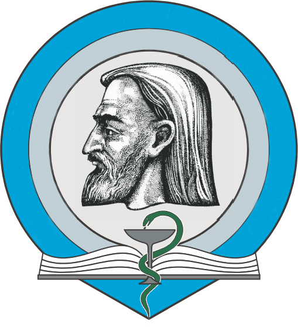

ՇՆՈՐՀԱԿԱԼԱԳԻՐ
Հարգելի Սամվել Սերգեյի Սարգսյան՝ դիմում եմ Ձեզ շնորհակալությամբ,որպես երեք երեխաների մայր,
քանի որ Ձեր թույլտվությամբ համար 19-ը պոլիկլինիկայում է աշխատում բժշկուհի Էլվիրա Թադևոսյանը։
Ծանոթանալով բժշկուհու հետ հասկացա, որքան բանիմաց, գրագետ և հոգատար է նա։
Չլինելով իր տեղանքից նա երբեք չի զլացել օգնել, միշտ կապի մեջ է եղել և հետաքրքրվել երեխաներիս առողջականից։
Փետրվարի 14-ին երեխաս վարակվեց ջրծաղիկով։ Կապ Հաստատելով և խորհրդակցելով բժշկուհու հետ երեք օր պահեցի տանը,
որից հետո բալիկս վատացավ։ Բժշկուհին ուղղորդեց ինֆեկցիոն հիվանդանոց, որից հետո տվեցինք անալիզներ։
Տրոմբոցիտները շատ ցածր էին՝ 98000։ Ես անհանգստացած զանգեցի բժշկուհուն և մինչ այրունաբանական բժշկուհու հետ
կապվելը նա ինձ հանգստացրեց ասելով, որ դա բուն ջրծաղիկն է։
Այս ամենը ցանկացա ներկայացնել՝ ասելով թե որքան խելացի և ճիշտ մոտեցում ցույց տվեց Բժշկուհին։
Միշտ ուրախ կլինեմ տեսնել նման բանիմաց բժիշկներ ձեր հաստատությունում։
Դիմող՝ Արմինե Համբարձումյան
Հասցե՝ Անդրանիկի 143շ․ 4բն․
Հեռ․ 093031164